自动舵项目架构与全函数调用说明
版本：2026-09-15，基于当前工作区源码，而非仅基于 Git 已提交版本。
定位：说明“工程由什么组成、一次调用如何执行、状态由谁维护、所有显式函数在哪里”。本次只新增文档、图表与生成工具，不修改控制算法。
阅读入口与覆盖范围
本项目的主体是 C++17、header-only 的自动舵控制库。它把 PD 控制、增益调度、Nomoto 在线辨识、ESC 自动优化和机动序列整合到 AutopilotCore；外围是主机仿真、调试 CLI、Python 工具、浏览器演示界面、单元测试及研究文档工具。
文档采用“分层流程说明 + 每个函数一张关系图”的组织方式，既能看清控制顺序，也能查到小工具、测试辅助函数和匿名回调。
| 阅读材料 | 内容 | 适合用途 |
|---|---|---|
| 本文 | 14 张分层架构/流程图及源码说明 | 建立整体认识、理解执行顺序和状态边界 |
| HTML 阅读版 | 带目录导航的离线网页，可浏览器打印为 PDF | 完整阅读图文、分享及打印 |
| 全函数交互图谱 | 554 张独立 SVG 关系图，可离线搜索、跳转，附源码摘录 | 按函数查调用者、被调用者和回调注册点 |
| 全函数索引 | 按文件列出每个定义、行号、图谱链接 | 查漏、代码导航、审阅清单 |
| 函数清单与关系数据 | 源文件 SHA-256、节点、边、调用点、解析证据 | 后续自动化和差异比较 |
| 分层图集 | 14 张 PNG + 可编辑 SVG | 单独阅读、复制进报告或演示文稿 |
“所有函数”的统计口径
本次扫描覆盖 56 个源码文件，共 520 个显式定义 + 34 个脚本入口节点：
| 语言/类别 | 显式定义数 | 范围 |
|---|---|---|
| C++ | 300 | 控制头文件、仿真、CLI、110 个 TEST(...) 测试体、辅助函数、lambda、两个诊断探针 |
| Python | 135 | 调试、绘图、动画、研究图表、PPT/PDF/HTML 辅助工具；含嵌套函数和 lambda |
| JavaScript | 83 | debug_ui.html 中的函数、箭头函数、DOM/WebSocket/滑块回调 |
| Shell | 2 | 两个批量生成脚本中的显式函数 |
| 脚本入口，单独计数 | 34 | Python 模块顶层、Shell 顶层、HTML 中的 5 个脚本块 |
CMake 的 4 个构建文件也纳入架构说明，但其中的 add_executable、target_link_libraries 等是 CMake 内建命令，不冒充项目自定义函数。第三方库、构建产物、缓存、编译器生成的隐式构造/析构及模板实例化不逐个列入。“全函数”指当前源码中显式定义的盘点，不是对所有可能运行时目标的穷尽证明。
新建的 docs/architecture/ 是这份报告的生成工具和产物，特意排除在自身扫描范围之外，以免生成器扫描生成器、生成页面再引入新的节点。
图例与可信度
- 主文档图中的编号/箭头按标题区分：总体架构图表示依赖与数据路径，具体流程图表示执行先后和条件。
- 交互图谱中，实线是已解析的静态调用关系；虚线是匿名函数定义、回调注册或传递，不表示立即执行。各条边附解析证据。
- 每张函数图都附全部已解析的项目内出边；未解析的表达式、库调用、宏、重载歧义单独列出。一个节点没有出边，不等于它“什么也没调用”。
- 当前 CodeGraph 索引包含过期文件。生成器只复用源码 SHA-256 匹配文件的调用信息，并重新扫描当前 C++/JavaScript/Shell 定义及 Python AST；没有重建索引。未获源码解析佐证的低置信度猜测边会被过滤，例如把
vector::size错配成RingBuffer::size。 - 图谱是保守的静态阅读辅助，不是编译器级完整调用分析，也不是实测运行轨迹。动态回调的最终目标、隐式调用和部分复杂接收者表达式仍需人工核对。
1. 总体架构与工程目录
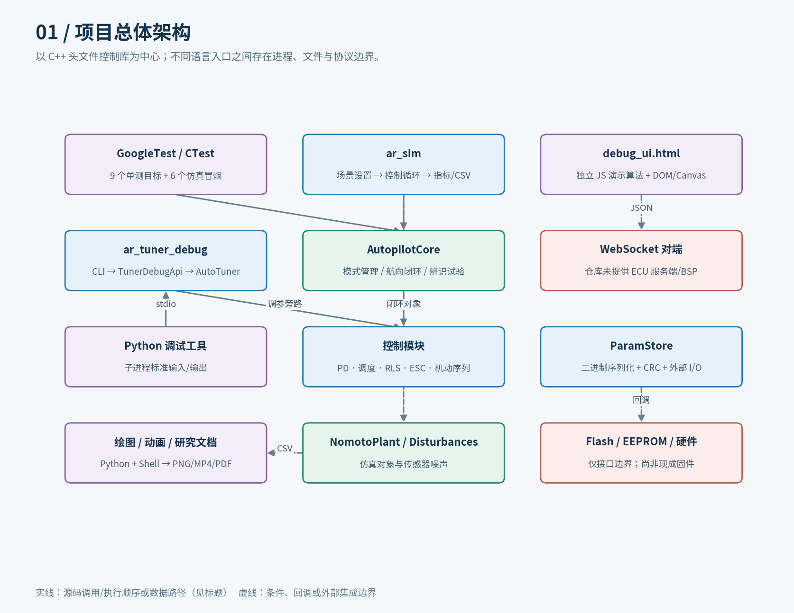
1.1 目录职责
auto_rudder/
├── CONTEXT.md 领域术语、当前架构约定
├── control/
│ ├── CMakeLists.txt C++17 构建与可选目标
│ ├── include/ 9 个算法/接口头文件
│ │ ├── autopilot_core.hpp 模式状态机与控制链编排
│ │ ├── pd_controller.hpp PD、限幅、量化
│ │ ├── gain_schedule.hpp 船速/海况增益表
│ │ ├── nomoto_identifier.hpp 自降频 RLS 辨识
│ │ ├── auto_tuner.hpp 基线、ESC、稳定门、回退
│ │ ├── maneuver_sequencer.hpp 航段序列与机动工厂
│ │ ├── param_store.hpp 小端参数编码、CRC、I/O 回调
│ │ ├── tuner_debug_api.hpp 调参内部状态的调试包装器
│ │ └── angle_utils.hpp 角度归一化与最短角差
│ ├── sim/ 仿真 CLI、船体模型、扰动、场景
│ ├── tests/ 9 组 GoogleTest 源文件
│ ├── tools/ 调试 CLI、Python、批处理脚本
│ └── ui/debug_ui.html 独立的浏览器演示与调试界面
├── docs/ 研究、设计、优化与图表辅助脚本
└── md2pdf.py Markdown 转 HTML/PDF 工具
1.2 构建关系
control/CMakeLists.txt 声明 ar_headers 为 INTERFACE 库：它传播头文件路径和编译选项，本身不生成 .a/.so 算法库。
| 目标/选项 | 默认状态 | 依赖和职责 |
|---|---|---|
ar_headers |
始终存在 | C++17 算法头文件接口 |
AR_BUILD_SIM → ar_sim |
ON | sim/main.cpp，链接 ar_headers |
AR_BUILD_TOOLS → ar_tuner_debug |
ON | tools/tuner_debug_cli.cpp，链接 ar_headers |
AR_BUILD_TESTS → 9 个测试目标 |
ON | 链接 ar_headers 与 GTest::gtest_main |
| 仿真 CTest 项 | 测试与仿真均启用时注册 | sim_all/validate/ident/esc/trial/maneuver_zigzag，超时 120 s |
GoogleTest 通过 FetchContent 引入，仓库固定版本 v1.14.0。Python 脚本、网页和研究文档工具不是 C++ 链接目标。项目也没有在这些目标中提供 STM32/RH850 启动代码、定时器、CAN/UART 驱动或 Flash 后端。
2. 状态归属与模块接口
“谁保存状态”比“谁包含哪个头文件”更能解释工程行为。
| 对象 | 持有的关键状态 | 主要输入 | 主要输出 |
|---|---|---|---|
AutopilotCore |
当前模式、航向参考、上一舵令、保持舵角、试验状态；各控制组件实例 | SensorInput、真实 dt、模式/机动命令 |
目标舵角 |
PdController |
参数、上一误差、滤波微分、上一输出、首拍标记 | 航向参考/测量，或原始舵令 | 限幅、限速、量化后的舵令 |
GainSchedule |
vector<GainPoint> 调度表 |
船速、海况 | 名义 Kp/Kd |
NomotoIdentifier |
归一化参数 θ、协方差 P、上一角速度、自降频计时、激励标记 | 实际舵角、角速度、真实间隔 | K/T、excited/valid |
AutoTuner |
基线、ESC 中心值、窗口、载波相位、滤波/解调状态、振荡检测器 | TunerInput：参考、测量、船速、调度值、辨识快照等 |
GainCommand，含本拍实际增益 |
ManeuverSequencer |
航段表、当前索引、累计转角/时间、完成标记 | 航向、角速度、间隔 | 当前航段的控制类型与目标 |
ControlParams / ParamStore |
待保存参数；外部读写/时钟函数对象 | 参数对象或原始字节 | 二进制数据、CRC、读写结果 |
Simulator |
船体、扰动、AutopilotCore、场景参数和样本 |
命令行场景参数 | 指标、轨迹、辨识/收敛结果 |
网页 State |
JavaScript 版参数、模型、历史、WebSocket、界面状态 | DOM 事件、计时器、消息 | 页面图形、下载文件、JSON 消息 |
控制库本身没有线程、主循环或全局硬件调度器。正常使用中，由调用方管理一个持续存活的 AutopilotCore 实例并周期性调用 step。param_store.hpp 虽被 Core 包含，但 Core 内并没有 ParamStore 成员或自动 load/save 流程；“包含关系”不能当成“调用关系”。
3. 主控制入口与模式生命周期
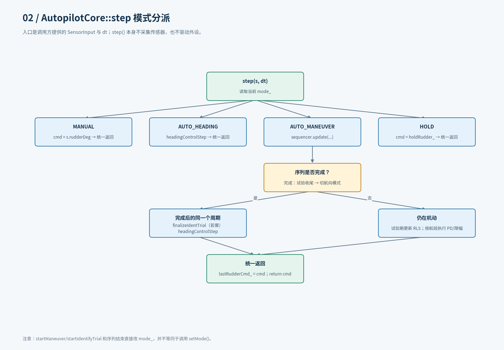
3.1 step(s, dt) 的四种分支
| 模式 | 本周期执行 | 不执行/需要注意 |
|---|---|---|
MANUAL |
直接返回 s.rudderDeg |
这是当前舵角透传，不是零舵，也不是额外手动命令输入 |
AUTO_HEADING |
调用 headingControlStep |
包含 RLS 与调参主入口 |
AUTO_MANEUVER |
更新航段；未完成时按航段运行 PD 或 saturate |
仅辨识试验运行期间在该分支更新 RLS；未完成时不调用 tuner.tick |
HOLD |
返回切入时保存的 holdRudder_ |
不更新 PD/RLS/ESC |
每个分支结束后，都把本次舵令写入 lastRudderCmd_，再返回给调用方。AUTO_MANEUVER 检测到序列完成时，若辨识试验正在运行，先收尾；随后直接设置航向模式和当前航向参考，并在同一周期调用航向控制链。
3.2 不同“切模式”入口并不等价
setMode(m) 在目标模式与当前模式相同时直接返回；实际切换时执行 pd.reset()、取消试验。切入 MANUAL/HOLD 时调用 tuner.suspend()，切入 AUTO_HEADING 时设置 pendingBaseline_，让首个航向控制周期用真实舵角初始化限速基准。
startManeuver()、startIdentifyTrial() 和机动自然结束则直接赋值 mode_，没有转调 setMode()。架构图中不能给这些路径自动补上 reset/suspend/initBaseline 的副作用。
3.3 Core 全部 17 个显式成员定义
| 函数组 | 职责/调用关系 |
|---|---|
AutopilotCore() |
显式 = default；组件初始化由各成员类型完成，图谱不展开编译器隐式调用 |
setMode、setHeadingRef |
模式生命周期和参考更新 |
startManeuver |
sequencer.setLegs，进入机动模式 |
startIdentifyTrial |
identifier.reset → zigzag(..., false) → setLegs，试验置为 RUNNING |
step、headingControlStep |
模式分派与完整航向控制链 |
idSnapshot |
读取 excited/valid/K/T，形成快照 |
finalizeIdentTrial |
idSnapshot → tuner.establishBaseline，映射为 OK/FAILED |
setTunerParams |
AutoTuner::setParams，会触发调参器重置 |
mode、identTrialState |
状态查询 |
pd、identifier、tuner、sequencer |
组件只读访问器 |
scheduleMut |
调度表可变访问器，供场景/标定替换整表 |
4. 一个航向控制周期怎样执行
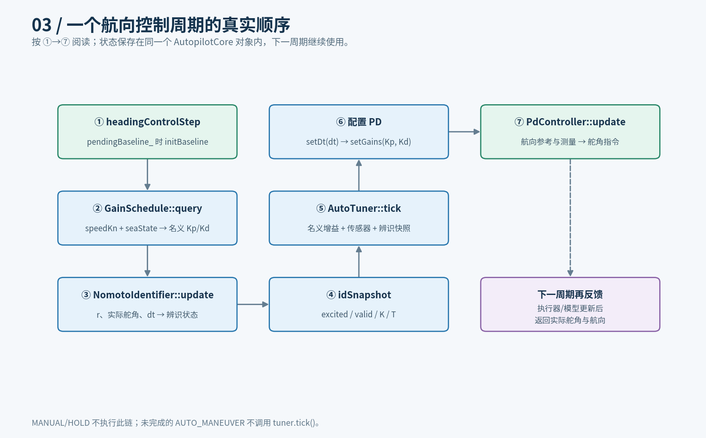
实际顺序如下，不能交换成“先 PD，后辨识调参”：
AutopilotCore::headingControlStep(s, dt)
① 若 pendingBaseline_：pd.initBaseline(s.rudderDeg)
② schedule.query(s.speedKn, s.seaState, kp, kd)
③ identifier.update(s.rudderDeg, s.rateDegS, dt)
④ idSnapshot() → 构造 TunerInput
⑤ tuner.tick(input) → GainCommand
⑥ pd.setDt(dt) → pd.setGains(command.Kp, command.Kd)
⑦ pd.update(headingRef_, s.headingDeg) → 舵角指令
注意：传给辨识和性能累计的是实际舵角反馈，不是刚计算出来的本拍新舵令；新舵令作用到对象后，其响应在后续采样周期才进入算法。
多个时间尺度
| 时间尺度 | 当前实现 | 含义 |
|---|---|---|
| 控制周期 | step(s, dt)；仿真通常 dt=0.02 s |
名义 50 Hz，但函数本身不保证调度频率 |
| RLS 节拍 | NomotoIdentifier 累加调用间隔，默认约 1 s 处理一次 |
不是每次调用都进行参数递推 |
| ESC 逐样本通道 | accumulate、escDither |
成本高通、解调累积和载波 |
| ESC 窗口通道 | windowSec / Params::dt 换算拍数 |
窗口更新、稳定门和回退 |
| 参考稳定资格 | refAgeSec_，阈值 30 s |
控制是否向振荡检测器喂样本，不是整个 ESC 的总开关 |
AutoTuner 的参考稳定时间使用输入 in.dt，但 ESC 相位、积分、窗口拍数仍使用 Params::dt。Core 没有在每拍把传入 dt 自动同步到调参参数中，集成方需要维护一致的时间契约。
5. PD、增益调度与角度工具
源码：pd_controller.hpp、gain_schedule.hpp、angle_utils.hpp。
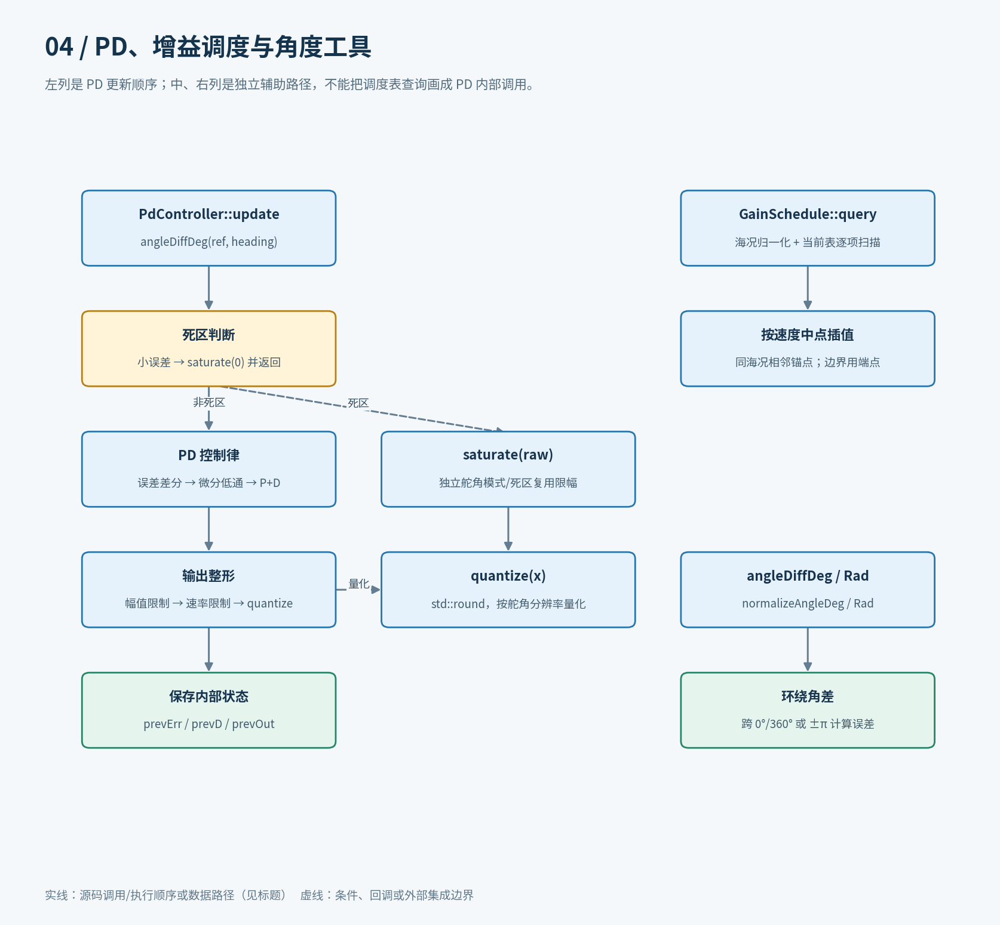
5.1 PdController：11 个定义
update(ref, heading) 先通过最短角差计算误差。死区内更新必要误差状态并走 saturate(0)；否则先处理首拍/误差差分和微分低通，再计算 PD 输出。输出依次经过舵角幅值限制、舵速限制和量化，最后保存历史值。
| 函数 | 调用或作用 |
|---|---|
| 默认构造、带参数构造 | 后者调用 setParams |
setParams |
保存参数、修正非正 dt/quant 后 reset |
params、setGains、setDt |
读取参数、单独更新增益/周期；setDt 只接受正值 |
initBaseline |
设置上一输出，避免自动接管时错误地从零舵爬升 |
saturate |
原始舵令的限幅/限速/量化入口 |
reset |
清历史误差、微分和输出，恢复首拍状态 |
update |
航向误差到舵令的控制流程 |
quantize |
使用 std::round 按分辨率量化 |
这里的微分项来自航向误差差分，而不是简单直接拿 SensorInput::rateDegS 乘 Kd。单独的 saturate 路径供舵角机动和死区复用，不包含 PD 计算。
5.2 GainSchedule：4 个定义
构造函数安装默认表；query 将海况钳到 0～3，在对应海况的条目中按速度区间中点做线性插值。低速/高速超出中点范围时取端点，找不到该海况条目时使用 Kp=1.0、Kd=0.5。
table() 返回表的只读引用；setTable() 用外部表替换当前表。当前工作区的 query 为单次遍历，不在查询期间构造临时 vector。插值仍依赖传入条目的顺序；setTable 本身不承担排序与完整校验。
5.3 angle_utils：4 个定义
angleDiffDeg → normalizeAngleDeg，angleDiffRad → normalizeAngleRad。这些工具处理跨角度边界的差值，被 PD、Core/调参、机动序列等复用。它们是纯计算辅助函数，不保存跨周期状态。
6. Nomoto 在线辨识
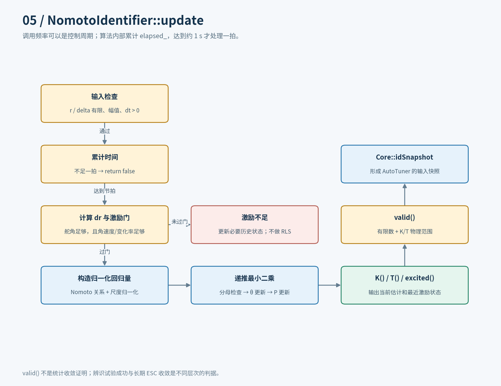
6.1 输入到估计的路径
辨识模型写成：
r = K·δ − T·dr/dt
φ = [δ/dScale, −dr/drScale]
Khat = θ[0]/dScale；That = θ[1]/drScale
update(delta, r, dtNow) 检查输入和节拍；达到辨识拍后，从历史角速度计算差分，要求舵角和角速度/角加速度满足激励门。通过后才构造归一化回归量、计算 RLS 增益、更新 θ/P，并为协方差对角线设置下界。
未到节拍、激励不足或分母退化均可返回 false。excited() 表示保存的最近一次辨识拍激励状态，并不保证本次控制周期刚执行了递推。valid() 检查 K/T 有限及物理范围，不等于“已统计收敛”或“已通过全部控制稳定性检查”。
6.2 全部 10 个定义
两个构造函数均调用 reset；setParams 更新参数后重置；params 只读。reset 初始化 θ/P、角速度、计时和标记；update 是唯一在线递推主入口；K、T 反归一化；excited 读标记；valid 调用 K/T 后做物理范围检查。
7. AutoTuner：基线与 ESC 的唯一编排者
源码：auto_tuner.hpp。该头文件含 33 个显式定义：6 个 RingBuffer 成员、3 个振荡检测成员及 24 个 AutoTuner 成员/构造定义。
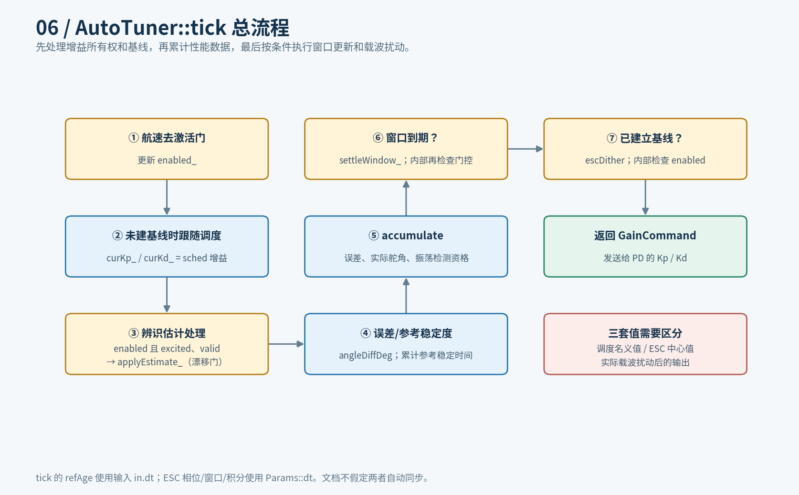
7.1 tick 与四种增益角色
- 船速决定本拍
enabled_。 - 尚无基线时，当前增益跟随调度名义值。
- 启用且辨识快照有效、受激时，调用
applyEstimate_。 - 检测参考变化，算最短角误差，调用
accumulate。 - 到达窗口拍数时，调用
settleWindow_。 - 复制当前中心增益；已建立基线时调用
escDither，返回GainCommand。
| 增益 | 所属位置 | 更新来源 |
|---|---|---|
| 调度名义值 | GainSchedule / TunerInput |
船速、海况、表标定 |
| 基线值 | baselineKp_ / baselineKd_ |
极点配置成功，供回退使用 |
| ESC 中心值 | curKp_ / curKd_ |
首次接管、重基线、窗口接受或回退 |
| 本拍实际值 | 返回的 GainCommand / PD 参数 |
中心值叠加乘性 sin/cos 扰动 |
因此，“PD 中观测到增益变化”不必然等于 ESC 中心在收敛；也可能只是载波、调度变化或辨识重新建立基线。
7.2 建立基线与重基线
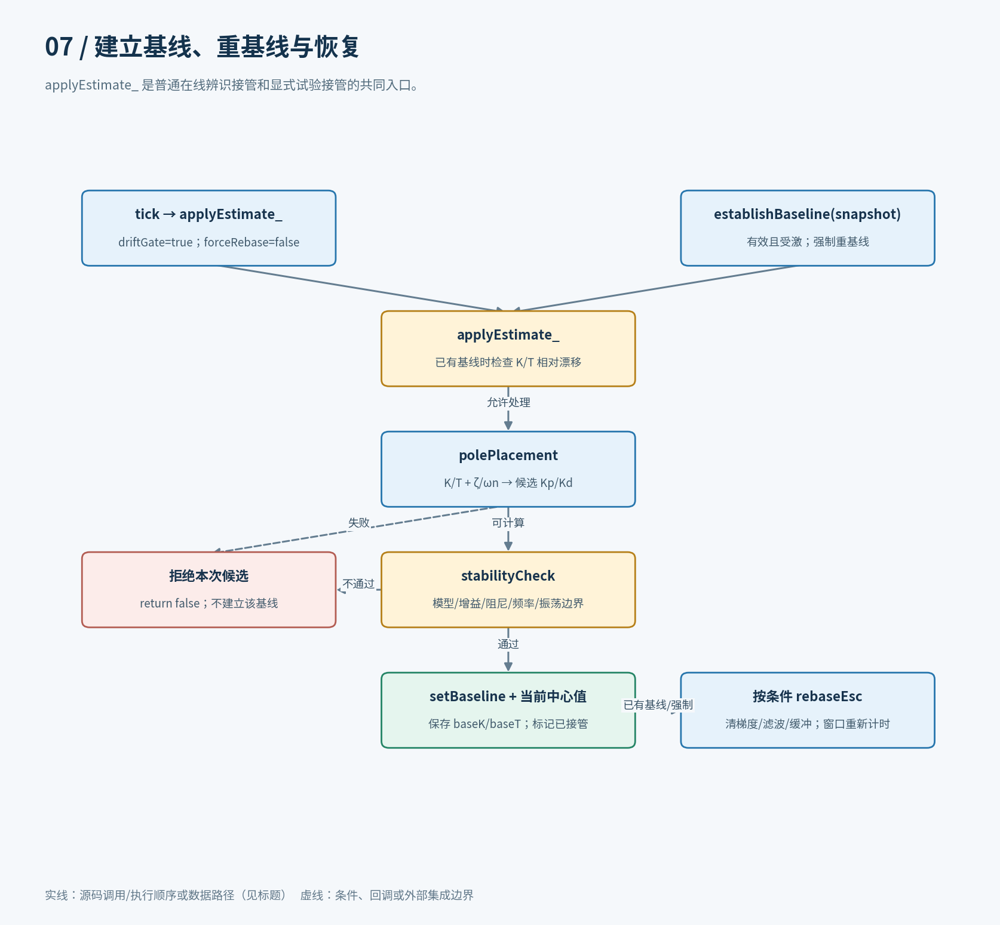
tick → applyEstimate_(driftGate=true, forceRebase=false) 是周期评估路径；establishBaseline → applyEstimate_(false, true) 是显式辨识试验/人工估计接管路径。后者先要求快照受激且有效，并以振荡幅度 0 进行代数稳定性检查。
applyEstimate_ 先判断是否需要重估：已有基线且 K/T 漂移都在阈值内时，交给 ESC 自治，不重设增益。否则进行极点配置：
Kp = ωn²·T/K
Kd = max(0, (2·ζ·ωn·T − 1)/K)
随后 stabilityCheck 检查模型、候选增益、等效阻尼/自然频率和振荡幅度约束。成功才保存新基线、中心值、基线对应的 K/T；如果是重基线或强制接管，则 rebaseEsc 并重新对齐窗口计数。
7.3 ESC 逐拍和逐窗流程
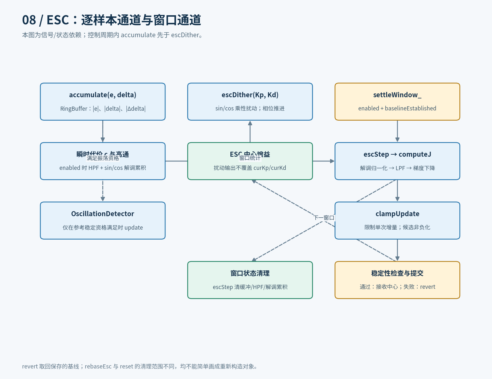
accumulate 每拍把 |e|、|δ|、|Δδ| 写入三个 RingBuffer，按参考稳定资格更新振荡检测器。启用状态下，计算带时间权重的成本增量，通过高通去除慢变分量，再乘 sin/cos 载波进行解调累积。
escDither 为 Kp/Kd 分别乘上 1+a·sin(phase) 与 1+a·cos(phase) 并推进相位，不覆盖保存的中心值。
settleWindow_ 内部要求已启用且已建立基线；它让 escStep 生成候选值，使用当前有效 K/T 和振荡测量检查候选，接受后写回中心，否则 revert 到基线。
escStep 的实际顺序是：
computeJ
→ 解调累积归一化
→ 按窗口周期设计的梯度低通
→ 梯度下降
→ clampUpdate + 非负约束
→ 清本窗口的样本、HPF 和解调累积
computeJ 遍历当前保留的样本，并非 O(1) 查询；三个固定缓冲各有 3000 个 double，仅样本数据即为 72,000 字节。窗口容量和参数中的窗口时长不是两个自动联动的配置：超过容量后缓冲覆盖旧样本，阅读/移植时不能把无限长窗口当成无限历史存储。
7.4 重置操作不能混用
| 操作 | 主要作用 | 不应误解为 |
|---|---|---|
reset |
初始化基线、中心、相位、窗口、检测器等调参内部状态 | 仅清除一个窗口 |
setParams |
保存新参数后调用 reset |
无扰动的在线参数热更新 |
rebaseEsc |
清梯度、HPF、解调累积、三个样本缓冲和上一舵角 | 清相位、振荡检测器或参考稳定时间 |
suspend |
禁用，调用 rebaseEsc，清窗口计数，保留基线/中心 |
永久禁止后续 tick 依据速度再次启用 |
revert(Kp,Kd) |
把传入引用赋为保存的基线 | 自动重建整个调参器或自动清窗 |
7.5 其余函数的调用归类
| 函数组 | 包含的全部定义 |
|---|---|
| 生命周期/配置 | 两个 AutoTuner 构造、setParams、params、reset、suspend |
| 状态查询 | enabled、baselineEstablished、currentGains、oscDetector |
| 调参编排 | tick、establishBaseline、applyEstimate_、settleWindow_ |
| 数值与基线 | polePlacement、stabilityCheck、setBaseline、revert |
| ESC 实现 | computeJ、accumulate、escDither、escStep、rebaseEsc、clampUpdate |
| 振荡检测 | OscillationDetector::reset/update/amplitude |
| 缓冲容器 | RingBuffer::push/size/empty/full/clear/operator[] |
8. 机动序列和自动辨识试验
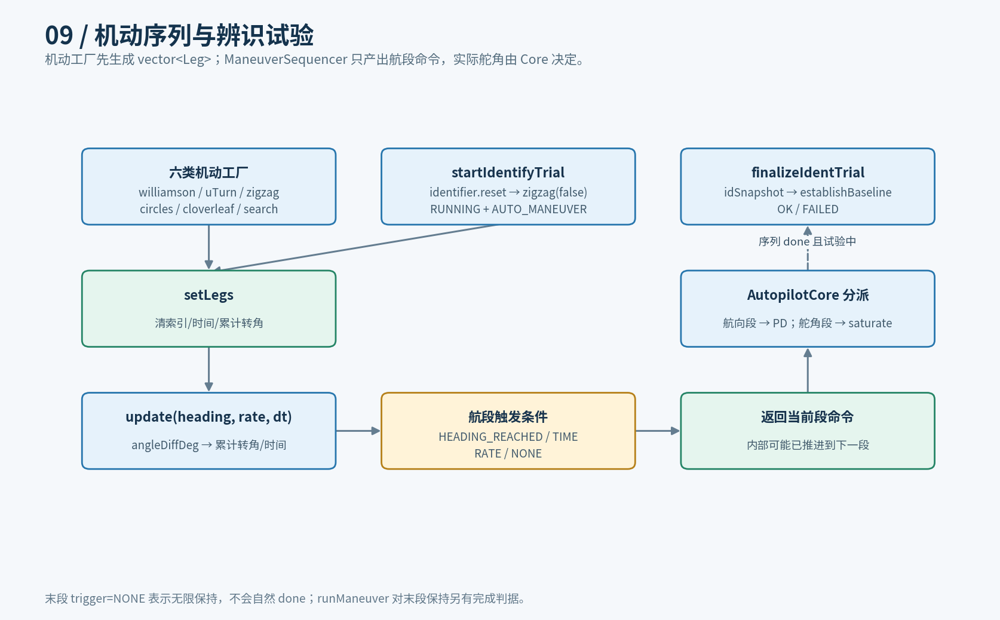
8.1 航段更新
setLegs 保存航段并重置进度；update 基于最短角差累计转角、累加时间，按当前 Leg 判断航向、时间或角速度触发条件。函数先构造当前段命令，再按条件推进索引，因此内部索引推进和返回新段命令不是同一件事。
序列器只输出 Cmd，不直接操作执行器。Core 对航向段查询调度表并调用 PD，对舵角段调用 PD 的 saturate。done/currentIndex/legs 是三种只读观察入口。
8.2 六个机动工厂
| 工厂函数 | 生成内容 |
|---|---|
williamson |
Williamson 回转航段，末段保持反向航向 |
uTurn |
U 形回转航段与后续航向保持 |
zigzag |
多周期交替舵角/航向触发，可选择是否附加最终保持段 |
circles |
按累计转角执行连续回转 |
cloverleaf |
三叶草航段组合 |
search |
分段延长的搜索航段组合 |
工厂需要时调用角度归一化工具，返回 vector<Leg>。末段为 Leg::Trigger::NONE 时表示无限保持，不会自然 done；仿真 runManeuver 把进入最后保持段也纳入完成判据，不能把该指标解释成“全部航向误差已收敛”。
8.3 自动辨识试验的收尾
startIdentifyTrial 重置 RLS，用 zigzag(..., holdFinal=false) 创建有限序列，试验置为 RUNNING。机动期间 Core 更新辨识器；序列结束调用 finalizeIdentTrial → idSnapshot → establishBaseline，根据接管结果变为 OK/FAILED，并继续航向控制。
这里的成功表示当前估计通过快照条件和基线接管检查，不是长期 ESC 性能已经最优。
9. 参数存储架构与实际数据格式
源码：param_store.hpp。
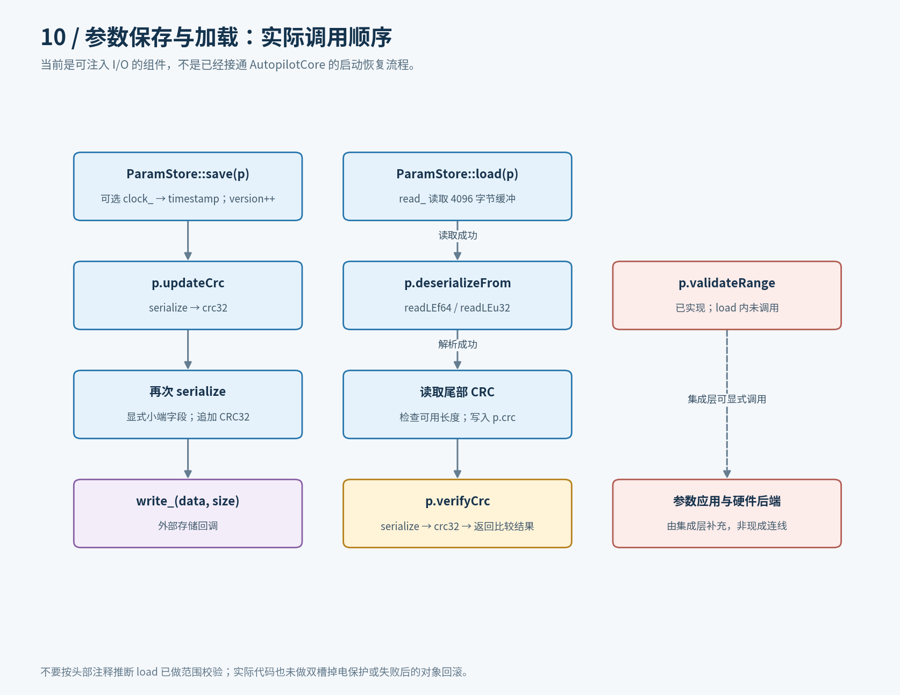
9.1 序列化布局
ControlParams::serialize 使用显式小端字段编码，不直接保存 C++ 结构体内存，也不是 YAML：
| 内容 | 字节数 |
|---|---|
8 个 double：舵角标定 3 项、最大舵速、K/T/Kp/Kd |
64 |
version、timestamp、schedCount，各 u32 |
12 |
每条调度记录：速度上下界、海况、Kp/Kd |
36 × N |
save 追加的 CRC32 |
4 |
| 合计 | 80 + 36 × N |
version 在 save 中自增；当前代码没有单独的格式版本迁移分派。保存的字段也不是所有 AutoTuner::Params 或完整运行状态快照。
9.2 全部 14 个函数定义与实际调用
| 函数组 | 调用关系 |
|---|---|
| 字节工具 | writeLEu32/writeLEf64/readLEu32/readLEf64；浮点通过 memcpy 转换位模式 |
| CRC | crc32，IEEE 反射多项式 0xEDB88320 |
| 序列化 | serialize 调用写入工具 |
| 校验 | updateCrc/verifyCrc 均调用 serialize → crc32 |
| 反序列化 | deserialize → deserializeFrom → readLE* |
| 范围校验 | validateRange，独立接口 |
| 存储抽象 | ParamStore 构造保存 ReadFn/WriteFn/ClockFn；save/load 调用外部回调 |
save 先可选地更新时间戳、增加版本号，再计算 CRC、序列化并调用写入回调。load 通过回调读取固定 4096 字节缓冲，解析字段、读取尾部 CRC，返回 verifyCrc 结果；各失败分支提前返回。
9.3 已实现与尚未接通
已实现的是字节格式、CRC 和可注入存储 I/O。尚未接通的是具体 Flash/EEPROM 地址、硬件驱动、启动加载后向各算法应用参数、掉电双槽、写入失败回滚。
尤其要以函数体为准：虽然文件头注释提到加载后范围检查，当前 load 实际没有调用 validateRange。反序列化还会直接修改目标对象，因此不能把失败描述为“完全不影响原参数”。图中将独立校验与集成工作画成未接通的边界，而不是已经存在的调用链。
10. 仿真系统的入口、对象与输出
源码：main.cpp、simulator.hpp、nomoto_plant.hpp、disturbances.hpp、scenarios.hpp。
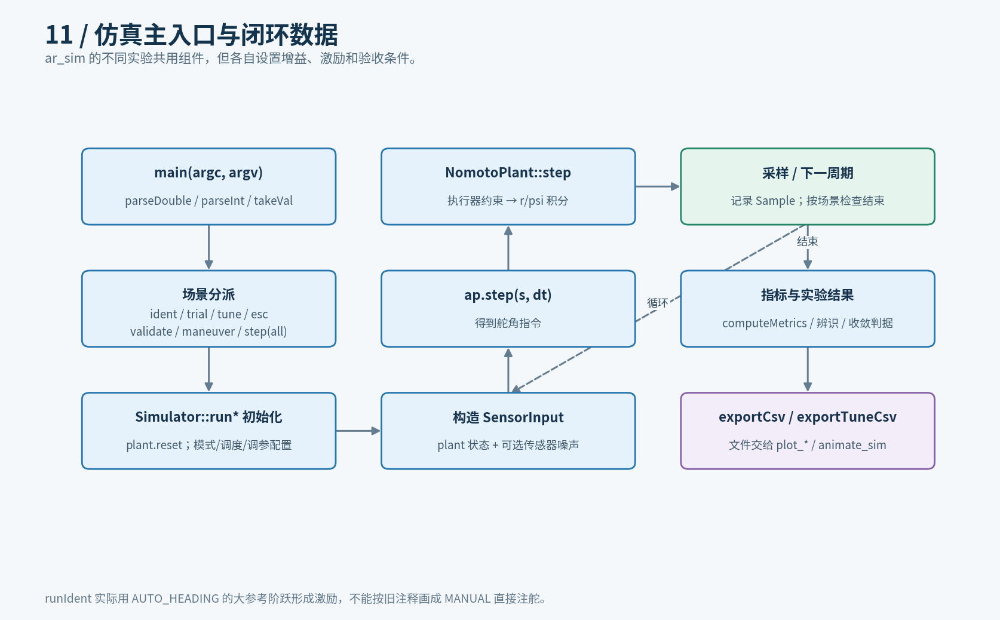
10.1 命令行入口
main 通过 parseDouble/parseInt 和局部 takeVal lambda 处理选项。printHelp 显示用法；defaultManeuverSec 提供默认机动时长；另一个局部 lambda 计算显示用的 J 散布。
现有分派是按代码顺序判定，不是并行执行全部实验。--list 后，主要场景的优先顺序是 ident → trial → tune → esc → validate → maneuver → step/--all。多个实验标志同时存在时，不应自行假定它们互斥或都会运行。
10.2 Simulator 的全部 13 个定义
| 函数 | 工作流与输出 |
|---|---|
autoLegSec |
根据模型与目标动态特性计算激励航段时长 |
runStep |
配置模式/调度 → 航向阶跃闭环 → computeMetrics |
runIdent |
使用 AUTO_HEADING 大幅参考阶跃形成激励 → 返回 Khat/That/valid/excited |
runEsc |
长期交替参考激励 → RLS/基线/ESC → 有界性与增益变化等结果 |
runTuneConvergence |
记录中心增益、实际增益、估计、窗口指标 → 收敛判据 |
runManeuver |
安装机动航段 → Core/Plant 循环 → 机动完成和边界检查 |
runIdentTrial |
startIdentifyTrial → 循环至试验结束/超时 → 接管结果 |
runValidation |
可选扰动的闭环验收，主机计时 → 控制指标 |
computeMetrics |
超调、调节时间、稳态偏差/标准差、舵令反转频率等 |
exportCsv 两个重载、exportLastCsv |
输出一般轨迹 CSV |
exportTuneCsv |
输出调参收敛轨迹与窗口信息 |
runIdent 的旧注释提到手动注舵，但实际代码在循环中设置 AUTO_HEADING 和大航向阶跃，再调用 ap.step。因此它不是直接绕过 Core 的开环 RLS 实验。
runTuneConvergence 不只看最终增益是否变化，还要求基线建立、辨识有效、至少 4 个窗口、末 3 窗 J 散布不超过 10%、末窗不劣于首窗超过 2%、模型估计相对误差不超过 25% 以及全程有界。窗口事件当前通过 Jpre>0 && Jpost==0 推断，不能当成调参器提供的独立事件接口。
10.3 模型与扰动的其余函数
NomotoPlant::reset 初始化船态；step 对执行器施加滞后、舵速和舵角约束，再积分一阶 Nomoto 角速度与航向。它是软件被控对象，不是生产控制器。
扰动模块含 lcg、seaFactor、setSeaState、disturbAngle、noisyHeading、noisyRate：海况决定扰动尺度，周期分量构造外扰，传感器噪声由伪随机数构造。当前噪声不是高斯采样，不能仅凭参数名中的 Sigma 就画成高斯噪声源。
defaultMatrix 提供默认船型/场景集合。runValidation 中的执行耗时来自主机 steady_clock，并不证明 STM32/RH850 上满足同样的实时预算。
11. 调参调试 API、CLI 与 Python 监视器
源码：tuner_debug_api.hpp、tuner_debug_cli.cpp、tuner_debug_monitor.py、tuner_debug_accept.py。
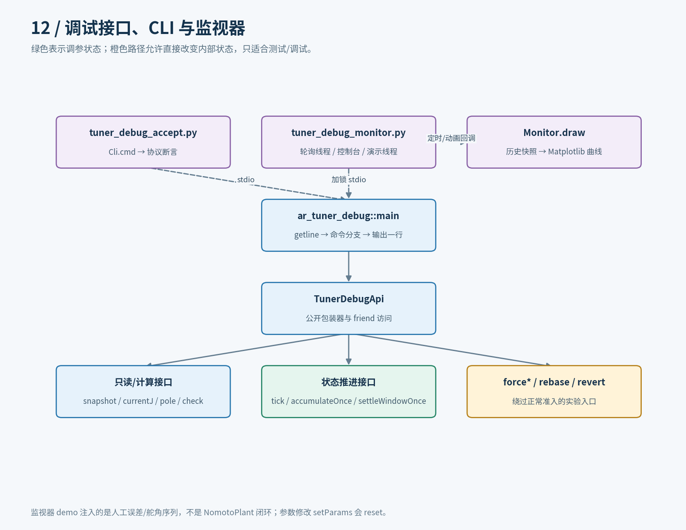
11.1 TunerDebugApi 的全部 27 个定义
| 分组 | 接口 | 实际目的 |
|---|---|---|
| 构造 | TunerDebugApi |
持有外部 AutoTuner&，不创建另一个调参算法 |
| 只读 | snapshot/currentJ/oscAmplitude/params |
观察内部状态、J、振荡与参数 |
| 数值检查 | polePlacement/stabilityCheck/clampUpdate |
包装对应算法函数 |
| 基线 | establishBaseline/evaluateEstimate |
显式接管或调用内部估计评估路径 |
| 单步执行 | ditherOnce/accumulateOnce/escStepOnce/settleWindowOnce |
拆开正常 tick 做实验 |
| 振荡检测 | oscFeed/oscReset |
调用嵌套检测器的更新/重置 |
| 生命周期 | tick/suspend/reset/setParams |
转发到调参器 |
| 恢复 | revertToBaseline/rebaseEsc |
读取回退增益或清理 ESC 测量状态 |
| 强制状态 | forceGains/forceBaseline/forceEscPhase/forceGradient/forceEnabled |
直接设置内部字段，绕过正常准入条件 |
revertToBaseline 把基线填到传入引用，不自动改当前中心；forceBaseline 也不能视为完整的 establishBaseline，因为它没有走估计、稳定门和全部基线元信息维护路径。
11.2 CLI 的 5 个定义
main 构造 AutoTuner 和调试包装器，逐行读取命令并进入相应分支；readN 读取数值参数；printHelp/printSnapshot/printParams 负责输出。
典型映射：status → snapshot，j → currentJ，pole/check → polePlacement/stabilityCheck，baseline/eval → establishBaseline/evaluateEstimate，accum/dither/step/settle → 单步接口，tick → tick。setparam 经 params → 修改副本 → setParams，因此会重置调参状态。
CLI 是本机标准输入/输出协议，没有在仓库中实现网络服务器或 ECU 串口驱动。
11.3 Python 跨进程关系
tuner_debug_accept.py 的 main 经 Cli.__init__ 启动 CLI；cmd 写命令/读回复，fields 解析键值，check 记录断言，close 收尾。其函数图中“子进程启动”与“C++ 普通函数调用”是不同边界。
监视器使用 DebugLink.__init__/cmd/status/close 封装带锁通信。Monitor.run 创建轮询、控制台及可选演示线程：
poll_loop → link.status，记录历史及可选 CSV。console_loop → link.cmd，转发用户命令。demo_loop注入人工误差/舵角序列并调用单步调参命令，不连接NomotoPlant，不是完整闭环验收。build_fig → draw → snapshot构造图形；动画update回调或无界面输出触发绘图，局部g辅助函数抽取历史字段。- 顶层
main解析参数并执行Monitor(args).run()。
12. 浏览器界面的独立事件架构
源码：debug_ui.html。
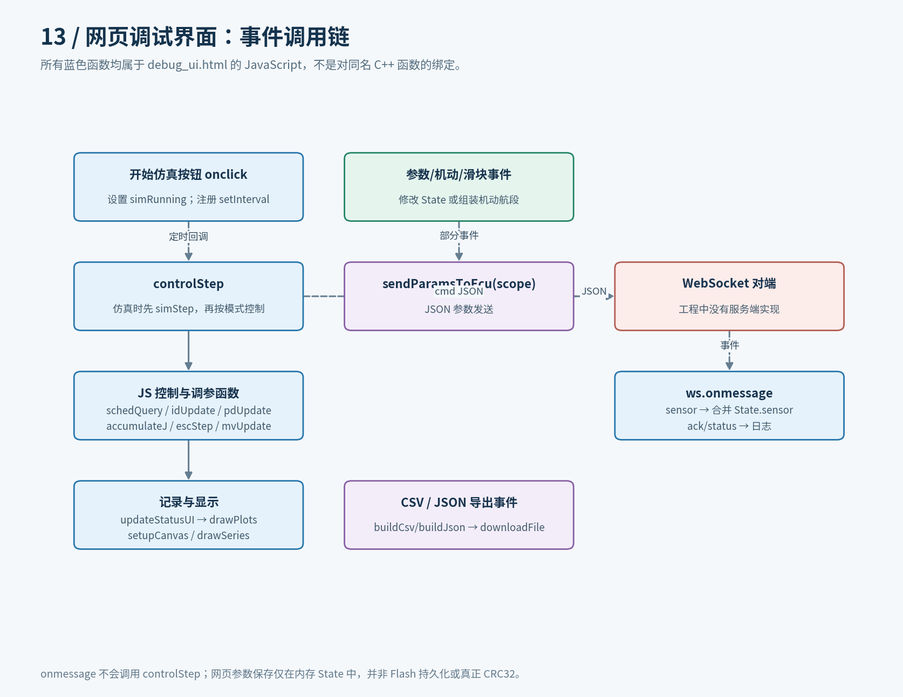
12.1 不是 C++ 控制库的前端绑定
网页定义了独立的 pdUpdate/schedQuery/idUpdate/polePlacement/stabilityCheck/escStep 等 JavaScript 算法。名称相似不代表直接调用 C++；仓库未提供 WASM 绑定，也未提供 WebSocket ECU 服务端。
网页调度是区间选择，与 C++ 中点插值不同；网页辨识没有照搬 C++ 的归一化与自降频；网页 ESC 仍使用窗口差值相关的简化算法。架构说明必须把它们画成两个实现域，不应混合解释为同一套实时控制路径。
12.2 控制、显示和消息分离
开始仿真按钮注册 setInterval(controlStep, ...)。controlStep 在仿真启用时先调用 simStep，再按当前模式执行网页算法，更新命令/历史，然后 updateStatusUI → drawPlots。有 WebSocket 连接时还可能发送 cmd JSON。
WebSocket 的 onmessage 对 sensor 消息合并 State.sensor，对确认/状态消息记录日志，没有调用 controlStep。所以不能画成“收到一个硬件样本就运行一次 C++ 控制”。浏览器计时器也不提供 MCU 实时保证。
12.3 网页全部函数的分组导航
| 分组 | 命名函数 |
|---|---|
| 基础/界面 | $、normDeg、diffDeg、clamp、log、setStatus |
| 参数消息与下载 | sendParamsToEcu、buildCsv、buildJson、downloadFile |
| 控制与调参 | pdUpdate、schedQuery、idUpdate、polePlacement、stabilityCheck、escStep、clampUpdate、accumulateJ、computeJ |
| 机动 | mvSetLegs、mvUpdate、mvWilliamson、mvUTurn、mvZigzag、mvCircles、mvCloverleaf、mvSearch |
| 周期与绘图 | simStep、controlStep、updateStatusUI、setupCanvas、drawSeries、drawPlots |
| 表单辅助 | renderSchedTable、bindSlider |
| 匿名函数/回调 | 页签、模式、仿真启停、参数应用、调度行编辑/删除、机动、保存/加载、WebSocket、滑块、导出等箭头函数；逐项见图谱 |
网页的 psSave/psLoad 按钮读写的是内存 State，不是文件系统/Flash 的持久化实现。网页所显示/计算的 CRC 也不能当成 C++ crc32 的一致性验证。
13. 测试、绘图、动画与文档工具
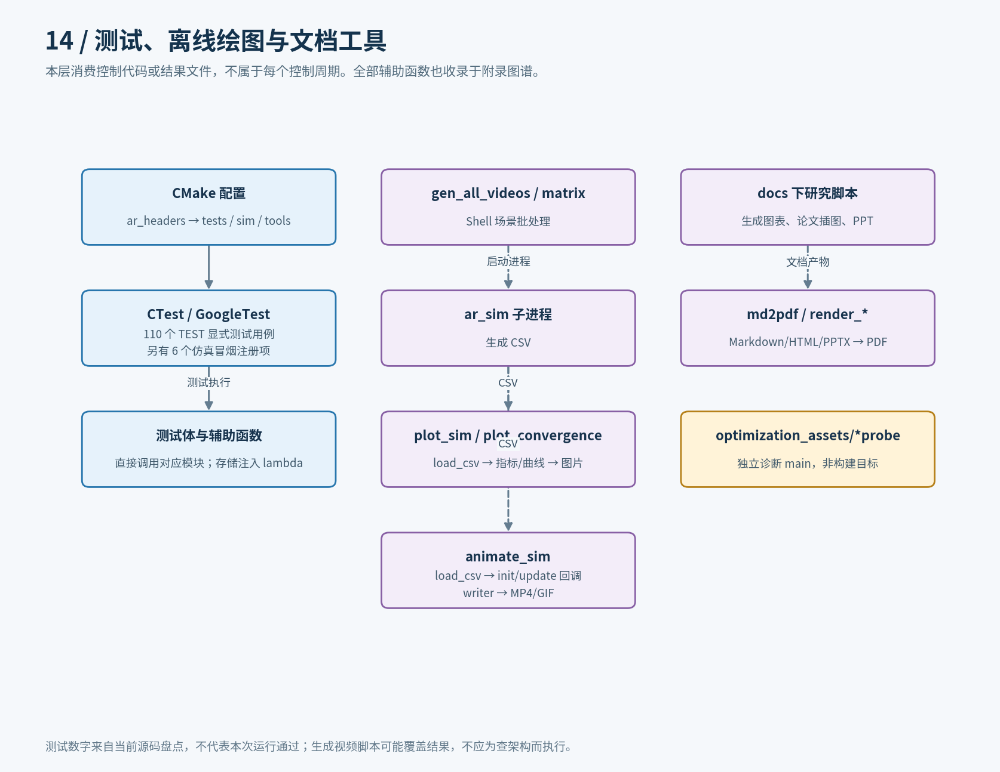
13.1 测试是另一组调用入口
当前源码包含 110 个 TEST(...) 测试体，分布在 9 个文件。图谱把每个宏测试体显示为 TEST(套件,用例)，而不是把所有测试挤成同名 TEST 节点；测试辅助函数、存储 lambda 也单列。
| 测试文件 | 调用的主要模块 |
|---|---|
test_angle_utils.cpp |
归一化、最短角差 |
test_pd_controller.cpp |
PD 更新、限幅、限速、量化与初始化 |
test_gain_schedule.cpp |
默认表、插值、边界、缺海况/替换表等当前测试 |
test_nomoto_identifier.cpp |
RLS、激励条件、输入处理与估计 |
test_auto_tuner.cpp |
tick、基线、门控、重基线与状态维护 |
test_maneuver_sequencer.cpp |
航段推进与机动工厂 |
test_param_store.cpp |
序列化、CRC、注入读写/时钟 |
test_autopilot_core.cpp |
模式、机动、辨识试验及集成链 |
test_tuner_debug_api.cpp |
调试包装器与单步/强制状态接口 |
另有 6 个仿真 CTest 注册项。上述数字来自源码盘点，不是本次执行测试后的通过数量。本次验证对象是文档、图谱和链接，未重新运行算法测试。
13.2 离线结果处理
| 工具 | 主要调用流程 |
|---|---|
plot_sim.py |
main → load_csv → compute_metrics/print_metrics_table → plot_multipane/plot_multipane_overlay/plot_polar；复用 _annotate_mode_changes/_polar_path |
plot_convergence.py |
读取收敛 CSV、推断/读取真值、绘制参数和性能曲线；辅助函数与 lambda 见索引 |
animate_sim.py |
main → load_csv → animate → init/update 动画回调；pick_writer 选择输出后端 |
gen_all_videos.sh |
顶层调用 gen，启动 ar_sim 生成 CSV，再启动动画脚本 |
gen_maneuver_matrix.sh |
三类船 × 六类机动 × 两种扰动；duration_for 决定时长，启动仿真/动画子进程 |
Shell 图中的 $SIM/$ANIM 是外部进程，不是与 C++ 算法同栈的函数调用。视频生成脚本有写入/覆盖输出的副作用，阅读架构无需运行它们。
13.3 研究与文档脚本也纳入全函数清单
| 目录/入口 | 作用 |
|---|---|
docs/auto_tuning/*.py |
调参与辨识流程图 |
docs/adaptive_autopilot_research/figs/*.py |
自适应控制、残差、频谱等研究插图 |
docs/esc_paper_zh/*.py |
论文插图提取和阅读引导图 |
docs/esc_parameter_reduction/generate_figures.py |
ESC 减参方案图 |
docs/project_overview/*.py |
工程概览图及 HTML 排版 |
docs/ship_energy_research/*.py |
研究图表、PPTX 和 PDF 渲染 |
md2pdf.py |
main → md_to_html → html_to_pdf，含 Markdown/数学/链接/资源处理辅助函数 |
docs/optimization_assets/*probe.cpp |
两个独立诊断入口及辅助函数；不是 control/CMakeLists 默认构建目标 |
部分研究脚本只有顶层代码、没有命名函数；仍以 <module entry> 收录其执行入口。图谱生成过程不会导入/执行这些项目脚本，避免分析时意外生成文档、启动浏览器或覆盖实验结果。
14. 集成边界与读图时常见误区
| 容易误读的连线 | 当前源码事实 |
|---|---|
include param_store.hpp → 自动从 Flash 恢复全部参数 |
只有编译依赖，没有 Core 的加载/应用调用 |
| 网页按钮 → 同名 C++ 函数 | 是独立 JS 实现；没有直接绑定 |
| WebSocket 传感器消息 → 执行一次控制 | 仅更新 State.sensor，没有触发 controlStep |
任何模式切换 → setMode 的清理逻辑 |
启动机动、启动试验和机动结束有直接赋值路径 |
| 任意自动模式 → RLS 与 ESC 每拍执行 | 完整链主要在航向模式；机动试验有单独的辨识支路 |
valid()==true → 辨识充分收敛 |
只说明当前模型估计通过物理范围检查 |
| 增益变化 → ESC 中心更新成功 | 还可能来自载波、调度或极点配置接管 |
load()==true → 已通过完整参数范围检查 |
当前 load 只完成解析与 CRC 路径，范围校验独立 |
| Linux 仿真通过 → MCU 实时/存储集成完成 | 芯片启动、I/O、调度、内存和时序仍属外部集成职责 |
正常硬件集成的边界可以概括为：调用方采集并校验传感器 → 保证时间契约 → 调用持久存在的 Core → 校验/下发舵令；配置加载、通信和非易失写入位于外围。这里说明职责边界，不宣称仓库已有这些 BSP 实现。
15. 图谱复现、验证与维护
15.1 重新生成
在仓库根目录运行：
python3 docs/architecture/generate_call_atlas.py
python3 docs/architecture/generate_diagrams.py
python3 docs/architecture/render_document.py
python3 docs/architecture/validate_artifacts.py
第一条仅依赖 Python 标准库与 rg；可读取现有 CodeGraph SQLite 数据库，但不要求网络或重新索引。没有数据库时会保留词法/AST 路径，并减少可解析边。
第二条依赖 Matplotlib 与 Noto Sans CJK 字体，输出 PNG 和保留文字的 SVG。分层图是人工按源码编排的说明图，算法变更后应同步审阅图中的条件/顺序，不是运行生成器就会自动适应任何控制逻辑变动。
第三条依赖 markdown-it-py，把主文档渲染为带目录的离线 HTML；没有外部字体、脚本或 CDN 请求。
第四条使用 markdown-it-py 与 Pillow 校验源码哈希、节点/边、HTML ID、全部本地链接/锚点和图像文件，并检查存储、调试和网页的关键调用边界。
15.2 本次验证口径
- 重新扫描当前源码定义；Python 以 AST 对照全部函数/异步函数/lambda，C++ 测试以当前
TEST(...)宏对照。 - 对源码哈希匹配文件，用 CodeGraph 定义交叉检查 C++ 清单，过期文件不复用调用位置。
- 检查所有函数节点有唯一 ID、一张 SVG 卡片，所有内部调用边目标存在。
- 人工核对 Core、RLS、调参、机动、参数存储、仿真和网页的关键条件与执行顺序。
- 检查主文档及附录链接、PNG/SVG 产物，并抽查图形可读性。
后续修改代码时，先重新生成索引/图谱，比较 functions.json 中的文件哈希和定义数量，再审阅受影响的分层图和文字。保留未解析项的可见性，比把动态/外部调用强行画成确定直连更有利于维护。
16. 源码与已有设计资料
本说明以当前函数体为依据。领域术语与 R1 职责边界参照 CONTEXT.md；此前的 工程优化分析报告、ESC 减参方案设计文档 可作为优化方向补充，不能替代当前实现事实。
查某一个函数时，从 全函数索引 跳转到 交互图谱，即可看到当前行号、源码摘录、调用者、全部已解析的项目内被调用者及尚未解析的调用表达式。